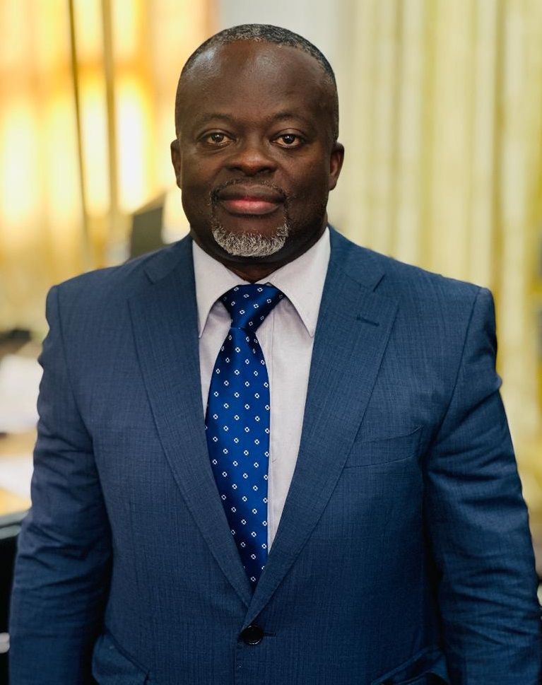

College of Basic and Applied Science CBAS
Welcome to the College of Basic and Applied Sciences, a diverse and vibrant community dedicated to discovery, to making
knowledge matter, and to developing all of its members to their utmost potential. We value your interest in the College.
Prospective students, current students, all staff members and visitors are considered as partners in our efforts to
build a world class College.
The College of Basic and Applied Sciences (CBAS) is one of the four colleges established by the University when it
adopted the collegiate system of governance. The College is home to more than 5000 undergraduate and 800 graduate
students. The College offers a valuable journey of learning and discovery across a broad range of Biological, Physical
and Mathematical, Engineering, Nuclear and Allied Sciences, Agriculture and Veterinary Sciences.
The College is a community of dedicated faculty whose teaching and research transforms the boundaries of our knowledge
and imagination.
The Constituent units of the College are the School of Agriculture, School of Biological Sciences,
School of Engineering, School of Nuclear and Allied Sciences, School of Physical and Mathematical Sciences, School of
Veterinary Medicine, Institute of Environment, and Sanitation Studies, Institute of Applied Science and Technology,
Biotechnology Centre and The West African Centre for Crop Improvement.
The objectives of the College
- To develop world-class scientists to meet national and global developmental needs through quality teaching, learning,
research, innovation and extension;
- Enhance staff capacity through systematic staff development programmes;
- Enhance research capabilities of staff for increased output in teaching and publications;
Develop effective processes for public engagement;
- Create congenial environment for teaching research and student learning experiences.
The College of Basic and Applied Sciences offers an unparalleled opportunity for students to engage in scholarship
spanning agriculture, biological sciences, engineering, nuclear and allied sciences, physical and mathematical sciences
and veterinary medicine.
Welcome again, I look forward to your earnest participation in ensuring we achieve our aim of becoming a world class
College.
News and Updates
ULTTA Shapes Quality Assurance in University of Ghana's Laboratories
- Stay informed about recent college developments with our news section.
- ULTTA conducted a three-day workshop themed "Assuring Quality of Laboratory Results in A World Class Research
Intensive University" from August 16-18, 2023. The event, held at the Adzei Bekoe Science Conference Hall in the
Department of Biochemistry, Cell, and Molecular Biology, focused on enhancing the competency of laboratory staff under
the School of Physical and Mathematical Sciences (SPMS). Prof. Larry P. Chegbeleh, representing the Dean of SPMS,
emphasized the importance of quality management systems, commending ULTTA's leadership. Ms. Mawuena Abortta, SPMS School
Administrator, stressed the need for best practices and relevant training for laboratory technicians and technologists.
Mrs. Joyce Duah, interim chairperson of ULTTA-UG, highlighted the significance of ISO/IEC 17025 standard, a global
benchmark for laboratory quality management. The workshop, featuring professionals from Ghana Standard Authority and
Quality Control Company, provided valuable insights, promoting the competency of laboratory staff. ULTTA executives seek
university management support for accrediting pivotal laboratories, aligning with the university's modernization and
internationalization drive. The workshop proves to be a valuable initiative in elevating laboratory staff competencies.
.